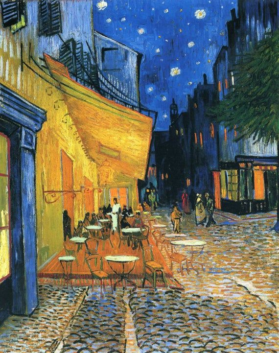

A Glimpse into the Night: Van Gogh's "The Café Terrace at Night"
Vincent van Gogh's "The Café Terrace at Night," painted in 1888, invites us to step into a tranquil night scene filled with warmth, color, and a sense of quiet contemplation. This iconic work captures the essence of the artist's unique vision and his ability to infuse ordinary scenes with extraordinary emotion.
The Ambiance of Evening
"The Café Terrace at Night" transports us to a charming corner of Arles, where a solitary café with its illuminated terrace becomes the focal point of the painting. Van Gogh masterfully captures the ambiance of the evening, blending rich blues and yellows to create a sense of both mystery and comfort.
The starlit sky, rendered with bold, swirling strokes, seems to mirror the energy of the lively scene below. Van Gogh's use of color and texture conveys not only the physical setting but also the emotional resonance of the night.
The Play of Light
One cannot discuss this masterpiece without acknowledging van Gogh's manipulation of light. The warm glow emanating from the café, the gas lamps, and the stars in the sky create a harmonious play of light and shadow. It's as if the night itself is alive with a quiet energy, inviting both solitude and connection.
A Space for Reflection
The café, depicted with meticulous detail, becomes a space for reflection and introspection. The solitary figure seated at the table invites viewers to imagine themselves partaking in the quietude of the night, perhaps engaged in thought or conversation. Van Gogh's choice of subject matter transforms a simple café into a place of universal contemplation.
Symbolism and Mood
"The Café Terrace at Night" is not merely a representation of a physical space; it is a manifestation of van Gogh's emotional state. The swirling patterns in the sky, the radiant colors, and the overall sense of movement contribute to a mood that is both serene and dynamic. The café becomes a stage where life's dramas unfold beneath the celestial canopy.
Legacy and Recognition
This painting holds a special place in the canon of van Gogh's work, showcasing his evolving style and his unique approach to capturing the beauty of the everyday. "The Café Terrace at Night" has become an enduring symbol of van Gogh's ability to find inspiration in the seemingly mundane and to elevate it to the realm of the extraordinary.
Conclusion:
As we immerse ourselves in "The Café Terrace at Night," we are transported to a realm where time stands still, and the ordinary becomes extraordinary. Van Gogh's mastery of color, light, and emotion is on full display, inviting us to join him in a moment of quiet contemplation under the starlit sky.
In the words of the artist, "I often think that the night is more alive and more richly colored than the day."